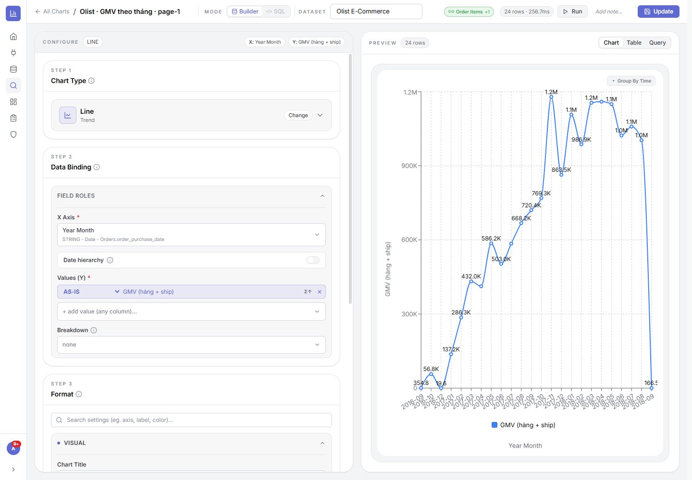
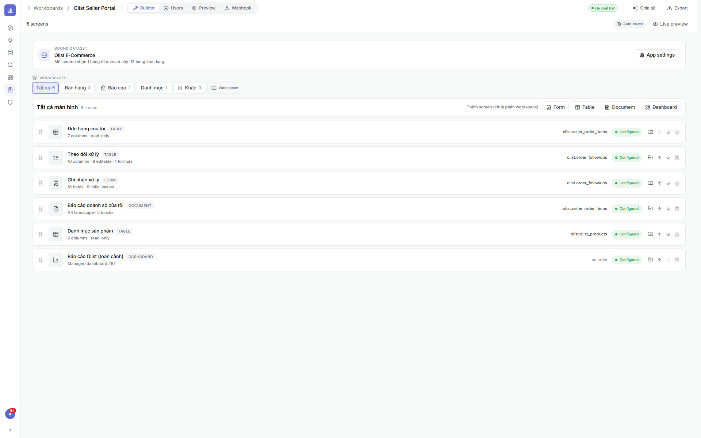
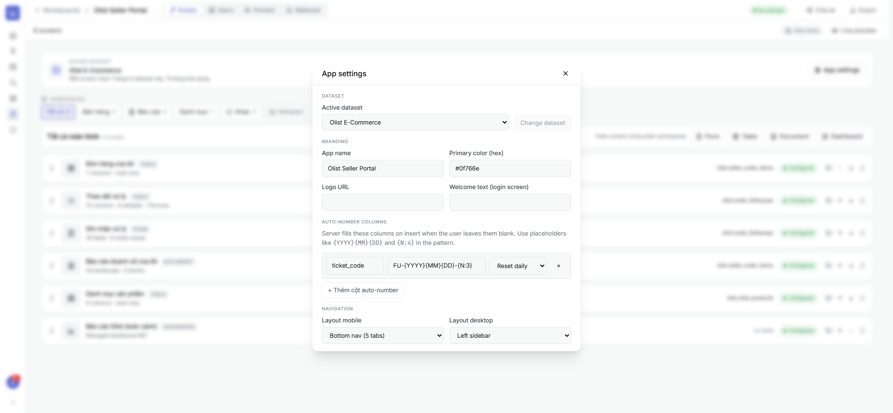
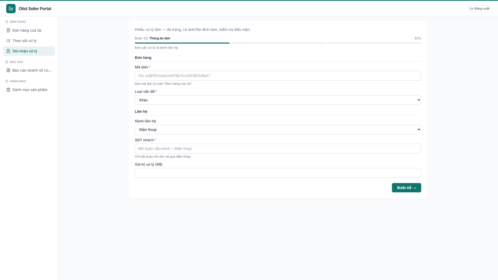
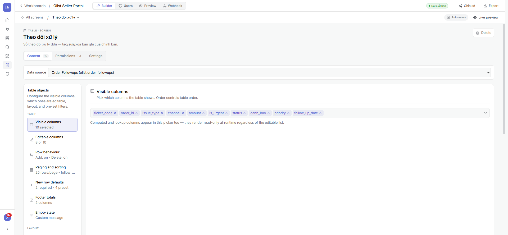
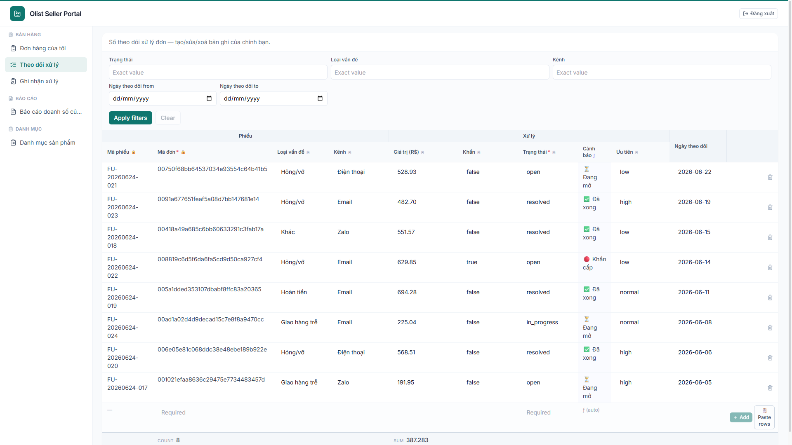

Giới thiệu AppBI
AppBI giúp doanh nghiệp biến dữ liệu thành quyết định: kết nối mọi nguồn, xây mô hình & chỉ số, trực quan hoá thành báo cáo tương tác, và đóng gói thành ứng dụng vận hành cho người dùng cuối — tất cả trong một nền tảng, do đội ngũ làm chủ hoàn toàn.
Tài liệu này hướng dẫn bạn sử dụng AppBI theo đúng hành trình thực tế — mỗi tính năng đều có phần “Cách làm” từng bước để bạn đọc là làm được ngay.
Dành cho ai? Nhà phân tích dữ liệu (DA), quản lý & lãnh đạo cần báo cáo, và đội vận hành cần ứng dụng nhập liệu — không yêu cầu biết lập trình.
5 điểm mạnh nổi bật
Vì sao AppBI khác biệt so với các công cụ BI thông thường.
Dựng hệ thống báo cáo cực nhanh nhờ Claude + MCP riêng
AppBI tích hợp một MCP server kết nối thẳng với trợ lý AI Claude. Thay vì thao tác tay từng bước, bạn có thể yêu cầu bằng ngôn ngữ tự nhiên để AI tự động dựng chuỗi Nguồn → Dataset → Mô hình → Biểu đồ → Báo cáo → Mini-app — rút thời gian từ nhiều ngày xuống còn vài phút.
Tuỳ biến không giới hạn — không phụ thuộc bên thứ ba
Toàn bộ nền tảng do đội tự phát triển, nên có thể thêm loại biểu đồ mới hay thêm tính năng riêng theo đúng nghiệp vụ từng khách hàng — không bị khoá bởi giấy phép hay lộ trình của nhà cung cấp ngoài.
Phân quyền đa hình thức, linh hoạt tới từng người
Không chỉ “công khai / nội bộ”. AppBI cho phép mỗi người một link báo cáo riêng, đặt mật khẩu cho link, số lượng không giới hạn; khoá/ẩn bộ lọc trên từng link; và RLS theo hàng để mỗi người chỉ thấy đúng phần dữ liệu của mình.
AI hướng dẫn & phân tích ngay trên báo cáo đang xem
Trợ lý AI sống ngay trong báo cáo: tổng hợp số liệu trực tiếp từ chính báo cáo người dùng đang xem, trả lời kèm trích dẫn biểu đồ nguồn, gợi ý câu hỏi tiếp, và hướng dẫn người mới cách đọc báo cáo. Người xem không cần biết SQL hay BI vẫn tự phân tích được.
Dữ liệu real-time từ Data Warehouse — không độ trễ chờ refresh
AppBI truy vấn trực tiếp (live) tới nguồn/Data Warehouse mỗi lần xem. Không sao chép dữ liệu, không lịch refresh — số liệu hiển thị luôn là mới nhất tại thời điểm mở báo cáo, kèm cache thông minh để vẫn nhanh trên dữ liệu lớn.
Bắt đầu nhanh trong 5 phút
Năm bước để đi từ con số 0 đến một báo cáo chia sẻ được.
Khái niệm cốt lõi
Sáu khái niệm giúp bạn hiểu cách AppBI vận hành.
Cập nhật sản phẩm
AppBI phát hành liên tục — cả nâng cấp lớn lẫn cải tiến nhỏ. Vài mốc mới nhất:
Báo cáo real-time (snapshot) + Govern & Observability
Báo cáo BigQuery tải gần thời gian thực; ra mắt module giám sát dữ liệu (Govern & Observability).
Xem hướng dẫn →Trợ lý AI thế hệ mới · Mobile & PWA · OCR tự điền form
AI router Nhanh/Sâu + tra cứu web; mini-app cài lên màn hình chính & offline; chụp ảnh phiếu AI tự điền.
Xem hướng dẫn →📜 Xem đầy đủ Nhật ký cập nhật & Lộ trình →
Nhật ký đầy đủ (từ tháng 5 tới nay), phân loại Lớn/Nhỏ theo từng mảng và người thực hiện — nằm ở trang riêng để dễ theo dõi khi số lượng tăng dần.
Kết nối dữ liệu — Data Sources
Điểm khởi đầu của mọi báo cáo. AppBI kết nối trực tiếp tới cơ sở dữ liệu, kho phân tích đám mây, bảng tính và file tải lên; dữ liệu được truy vấn live, không cần sao chép thủ công.
1.1Danh sách nguồn dữ liệu
Là gì: nơi quản lý mọi kết nối — thống kê, tìm kiếm, lọc theo loại/quyền/chủ sở hữu, xem dạng lưới hoặc bảng.
⚙ Cách làm
- Mở Data Sources ở thanh điều hướng trái.
- Dùng ô Search hoặc bộ lọc All source types để tìm nhanh nguồn.
- Trên mỗi dòng, dùng các nút Test connection, Share, Delete ở cột Actions.

1.2Tạo nguồn mới & các loại nguồn
Là gì: AppBI hỗ trợ PostgreSQL, MySQL, BigQuery, Google Sheets và Manual Table (Excel/CSV). Kết nối được kiểm tra tự động khi lưu.
⚙ Cách làm
- Bấm New Data Source.
- Đặt Name và chọn Type (loại nguồn).
- Nhập cấu hình tương ứng:
- PostgreSQL/MySQL: host, port, database, schema, user, password.
- BigQuery: đăng nhập Google (OAuth) hoặc dán Service Account JSON.
- Google Sheets: kết nối Google rồi chọn spreadsheet/sheet.
- Manual Table: kéo-thả file
.csv/.xlsxvào vùng tải lên.
- Bấm Create — hệ thống tự test kết nối; nếu lỗi sẽ báo ngay.


1.3Sửa cấu hình & kiểm tra kết nối
Là gì: cập nhật thông tin kết nối an toàn. Thông tin nhạy cảm (mật khẩu, khoá) được mã hoá; để trống nghĩa là giữ nguyên giá trị cũ.
⚙ Cách làm
- Bấm vào tên nguồn để mở chi tiết, rồi bấm Edit.
- Sửa các trường cần thiết (mật khẩu để trống nếu không đổi).
- Bấm Update/Save — kết nối được kiểm tra lại tự động.
- Hoặc bấm Test connection ở danh sách để kiểm tra mà không cần sửa.

1.4Chia sẻ & phân quyền
Là gì: cấp quyền cho người dùng/nhóm với 3 mức Xem / Sửa / Toàn quyền. Cơ chế này dùng nhất quán cho cả Dataset, Chart, Dashboard, Workboard.
⚙ Cách làm
- Bấm biểu tượng Share trên nguồn cần chia sẻ.
- Nhập email người dùng (hoặc chọn nhóm), chọn vai trò Viewer/Editor/Full.
- Bấm Share. Có thể thu hồi quyền bất cứ lúc nào trong cùng hộp thoại.

Dataset & Mô hình dữ liệu
Dataset là “lớp ngữ nghĩa” biến dữ liệu thô thành mô hình sẵn sàng phân tích: gom nhiều bảng, định nghĩa quan hệ, tạo chỉ số (Measure), kiểm soát chất lượng và tài liệu hoá ý nghĩa từng cột.
2.1Danh sách Dataset
Là gì: quản lý toàn bộ Dataset, lọc chéo theo dashboard/chart/nguồn, chia sẻ và xoá (có chặn phụ thuộc).
⚙ Cách làm
- Mở Datasets. Bấm New Dataset để tạo mới (đặt tên + mô tả).
- Bấm vào một Dataset để mở không gian làm việc của nó.

2.2Không gian làm việc Tables
Là gì: trung tâm của Dataset — sidebar gom bảng theo nhóm (Source / Calculated / Calendar / Measures), lưới xem trước dữ liệu, công cụ quản lý cột & xuất Excel. Có 3 tab: Tables · Quality · Model.
⚙ Cách làm
- Ở tab Tables, chọn một bảng trong sidebar trái để xem dữ liệu.
- Dùng Columns để ẩn/hiện cột, Export Excel để tải dữ liệu.
- Chuyển tab Model để dựng quan hệ, tab Quality để kiểm soát chất lượng.

2.3Thêm bảng vào Dataset
Là gì: ba cách đưa bảng vào mô hình — bảng vật lý, truy vấn SQL, hoặc bảng dẫn xuất.
⚙ Cách làm
- Trong nhóm Source (hoặc Calculated), bấm + Add.
- Chọn cách thêm:
- From Table: chọn nguồn → chọn bảng có sẵn.
- From SQL Query: chọn nguồn → viết câu SQL tuỳ ý.
- Calculated: viết SQL tham chiếu các bảng khác trong Dataset.
- Bấm Add Table — cột được tự suy luận kiểu dữ liệu.

2.4Quản lý cột & cột tính toán
Là gì: ẩn/hiện cột; thêm cột tính toán bằng công thức kiểu Excel (IF, LOOKUP, SUM…) hoặc JavaScript; đổi kiểu & định dạng (số/tiền/%/ngày).
⚙ Cách làm
- Bấm Columns trên thanh công cụ để mở bảng quản lý cột.
- Tích/bỏ tích để hiện/ẩn từng cột, rồi Apply.
- Để thêm cột tính toán: bấm + Add column, chọn Excel formula hoặc JavaScript, nhập công thức, xem preview rồi lưu.
- Đổi định dạng/kiểu: mở popup định dạng trên tiêu đề cột (số lẻ, ký hiệu tiền tệ, định dạng ngày…).

2.5Mô hình dữ liệu (ERD) & quan hệ
Là gì: sơ đồ trực quan các bảng và quan hệ. Tạo/sửa quan hệ với loại join, cardinality (1:1, 1:N…), khoá chính, hướng lọc chéo. Nút Generate Model tự dò quan hệ theo khoá ngoại.
⚙ Cách làm
- Mở tab Model của Dataset.
- Bấm Generate relationships để hệ thống tự đề xuất quan hệ, hoặc Add Relationship để tạo tay.
- Trong hộp thoại quan hệ: chọn From/To table, cặp cột khoá, Join type, Cardinality, hướng cross-filter → Save.
- Bấm vào một đường nối để sửa, hoặc bấm ✕ để xoá quan hệ.


2.6Measures — chỉ số nghiệp vụ
Là gì: chỉ số tái sử dụng (vd Doanh thu, AOV, % giao đúng hẹn). Định nghĩa một lần với biểu thức, bộ lọc riêng, định dạng, nhóm folder; hỗ trợ nhiều loại (sum, count_distinct, % of total, formula, window…).
⚙ Cách làm
- Trong sidebar, mở nhóm Measures và bấm + Add (chọn bảng đích).
- Nhập Label (tên hiển thị) và biểu thức (vd
SUM(total_revenue)hoặc tham chiếu measure khác). - Tuỳ chọn: thêm bộ lọc (WHERE), chọn định dạng (số/tiền/%), gán folder.
- Lưu — measure sẵn sàng dùng trong Explore và mini-app.

2.7Date table (chiều thời gian) & Từ điển
Là gì: tạo bảng lịch chuẩn (năm/quý/tháng/tuần, fiscal year, auto-join cột ngày) để phân tích theo thời gian. Dictionary tài liệu hoá ý nghĩa từng bảng/cột kèm % độ phủ.
⚙ Cách làm
- Date table: mở hộp thoại Calendar, đặt khoảng ngày, ngày đầu tuần, tháng đầu năm tài chính, bật auto-join cột ngày → Save.
- Dictionary: ở tab Model bấm Dictionary, điền mô tả cho bảng/cột; theo dõi % đã tài liệu hoá.

2.8Chất lượng dữ liệu (Data Quality)
Là gì: giám sát dữ liệu theo 6 chiều — Completeness, Validity, Uniqueness, Consistency, Timeliness, Accuracy — với 13 loại rule, gợi ý bằng AI, xem trước PASS/FAIL, chạy theo lịch và lưu lịch sử.
⚙ Cách làm
- Mở tab Quality, bấm + Add Rule.
- Chọn bảng, loại rule (not null, accepted values, range, unique, freshness, custom SQL…) và cột.
- Đặt mức độ (Info/Warning/Error), xem Live preview, bấm Run test để thử trên dữ liệu thật → Create Rule.
- Bấm Run Now để chấm điểm, hoặc Automate để chạy theo lịch.


Explore — Trình tạo biểu đồ
Nơi biến dữ liệu thành hình ảnh. Bạn đi theo 3 bước từ trên xuống (Loại biểu đồ → Gắn dữ liệu → Định dạng) và xem kết quả ngay ở khung bên phải. Hỗ trợ 33 loại biểu đồ trên 6 nhóm.
3.0Bố cục màn Explore — vùng nào làm gì
Màn hình chia làm 3 khu vực. Hiểu 3 khu này là dùng được mọi biểu đồ:
- ① Thanh trên cùng: chọn Dataset (kho dữ liệu) & Base table (bảng gốc), công tắc Builder ↔ SQL, nút Run (chạy thử), Save/Update (lưu), và Add note (ghi chú ý đồ biểu đồ).
- ② Cột cấu hình (bên trái) — 3 bước: Bước 1 chọn loại biểu đồ · Bước 2 gắn dữ liệu vào các “vai trò” (trục, giá trị…) · Bước 3 định dạng (màu, nhãn, trục…).
- ③ Khung xem trước (bên phải): 3 thẻ Chart (hình), Table (bảng số), Query (câu SQL hệ thống chạy). Bấm Run để cập nhật.

3.1Bước 1 — Chọn loại biểu đồ
Vùng này để làm gì: chọn hình thức trực quan trước, vì nó quyết định Bước 2 cần gắn những trường nào. 33 loại được gom vào 6 nhóm theo mục đích — chọn nhóm rồi chọn loại.
Chọn nhóm nào khi…
- Essentials — số/bảng cốt lõi: Table, Matrix (bảng & bảng chéo), KPI (một con số nổi bật), Gauge, Bullet (so với mục tiêu), Podium (xếp hạng top). → khi cần “con số” hơn “hình”.
- Comparison — so sánh giữa các hạng mục: Bar / Horizontal / Grouped / Stacked Bar, Waterfall (tăng/giảm lũy kế), Heatmap, Treemap, Funnel (phễu chuyển đổi).
- Trend — diễn biến theo thời gian: Line, Area, Time Series, Bar + Line (cột + đường 2 trục).
- Composition — cơ cấu/tỷ trọng: Pie, Donut, Polar, Sunburst (phân cấp), Sankey (luồng).
- Relationship — quan hệ giữa 2+ chỉ số: Scatter, Bubble, Radar, 9-Box Grid.
- Geo — bản đồ: Point Map (điểm), Region Map (vùng).
⚙ Cách làm
- Vào Explore → New Chart, chọn Dataset ở thanh trên.
- Ở Bước 1, bấm tab nhóm (Essentials/Comparison/…) rồi bấm loại biểu đồ.
- Đổi ý lúc nào cũng được: bấm Change ở thẻ loại để chọn lại (cấu hình tương thích sẽ được giữ).

3.2Bước 2 — Gắn dữ liệu (Field Roles)
Vùng này để làm gì: bạn “đổ” các cột dữ liệu vào những vai trò mà biểu đồ cần. Mục có dấu * là bắt buộc. Tuỳ loại biểu đồ, các vai trò hiện ra sẽ khác nhau — dưới đây là các vai trò phổ biến:
- X Axis (trục/chiều phân tích) — cột dùng để chia nhóm/đặt lên trục ngang (vd Tháng, Sản phẩm, Khu vực). Với cột ngày có thêm công tắc Date hierarchy để khoan sâu Năm → Quý → Tháng → Ngày.
- Values / Y (giá trị cần đo) — con số muốn hiển thị, kèm hàm tổng hợp:
- AS-IS — lấy nguyên giá trị (không gộp).
- SUM — cộng tổng · AVG — trung bình · MIN/MAX — nhỏ nhất/lớn nhất.
- COUNT — đếm số dòng · COUNT DISTINCT — đếm giá trị khác nhau (vd số khách duy nhất).
- Breakdown (tách nhóm/màu) — tách mỗi giá trị theo một cột nữa (vd doanh thu theo kênh) → tạo nhiều cột/đường/lát màu.
- Vai trò riêng theo loại: Scatter/Bubble/9-Box có X/Y (kèm hàm tổng hợp) + Size (kích thước) + Label; Time Series có trường thời gian; Bảng có chọn cột hiển thị / pivot (hàng × cột).
⚙ Cách làm
- Chọn cột cho X Axis (chiều) và Values (Y) (giá trị).
- Mở ô hàm tổng hợp bên cạnh giá trị → chọn SUM/AVG/COUNT… cho đúng ý nghĩa.
- (Tuỳ chọn) thêm Breakdown để tách nhóm; với cột ngày bật Date hierarchy.
- Bấm Run để xem kết quả ở khung bên phải.

3.3Bước 3 — Định dạng (Format)
Vùng này để làm gì: làm biểu đồ dễ đọc & đẹp. Có ô tìm thiết lập ở đầu (gõ “màu”, “nhãn”, “trục”…) và các nhóm gập/mở:
- VISUAL (hiển thị cơ bản):
- Chart Title — tiêu đề biểu đồ (để trống thì dùng tên chart).
- Color Palette — bảng màu: Default / Vibrant / Classic / Monochrome / Pastel; có thể đổi màu từng series riêng.
- Number Format — cách hiển thị số: Auto (raw), Compact (1.2K, 3.4M), Full Number (1,234), Percent (%), Currency ($).
- Legend — vị trí chú giải: Top / Bottom / Left / Right / Hidden.
- ADVANCED (nâng cao): bật/tắt nhãn dữ liệu (hiện số ngay trên cột/điểm) & vị trí nhãn, sắp xếp (sort), giới hạn Top/Bottom N, kiểu đường/độ dày/điểm cho Line, độ trong cho Area, đường mốc (benchmark)…
- AXES & SCALE (trục & thang đo): đặt tiêu đề trục X/Y, giá trị nhỏ nhất/lớn nhất của trục Y, đơn vị hiển thị (nghìn/triệu/tỷ), bật/tắt lưới.
- Chart Filters (bộ lọc của riêng biểu đồ): lọc dữ liệu lưu kèm chart và chạy trước bộ lọc cấp dashboard — dùng để cố định phạm vi (vd chỉ đơn “delivered”).
⚙ Cách làm
- Mở nhóm cần chỉnh (hoặc gõ vào ô tìm thiết lập), đổi giá trị → biểu đồ cập nhật ngay.
- Bật nhãn dữ liệu ở ADVANCED nếu muốn người xem thấy số ngay trên hình.
- Đặt Top/Bottom N khi cột/lát quá nhiều (vd chỉ Top 10).

3.4Xem trước · Run · Save · chế độ SQL
Vùng này để làm gì: chạy thử, đối chiếu số, và lưu biểu đồ. Khung xem trước (bên phải) có 3 thẻ:
- Chart — xem hình trực quan.
- Table — xem bảng số đúng như dữ liệu vẽ ra (để đối chiếu).
- Query — xem câu SQL hệ thống chạy thẳng trên nguồn + dialect + thời gian chạy + số dòng. Đây là bằng chứng dữ liệu là real-time (không phải bản sao cũ); có nút Copy SQL.
⚙ Cách làm
- Bấm Run mỗi khi đổi cấu hình để cập nhật xem trước.
- (Tuỳ chọn) đổi Base table ở thanh trên để dùng bảng gốc khác (các bảng đã nối hiện ở “joinable”).
- Bấm Add note ghi lại ý đồ/giả định của biểu đồ cho người sau.
- Bấm Save (chart mới) hoặc Update (chart có sẵn) để lưu — sau đó có thể đưa vào Dashboard.

3.5Biểu đồ nâng cao — ví dụ 9-Box Grid MỚI
Là gì: các loại quan hệ/nâng cao có cấu hình riêng. 9-Box chia lưới 3×3 theo hai trục có hàm tổng hợp (SUM/AVG) + nhãn phân nhóm — hữu ích để đánh giá danh mục/nhân sự.
⚙ Cách làm
- Chọn loại 9-Box Grid ở nhóm Relationship.
- Gán X Axis và Y Axis (chọn hàm tổng hợp cho mỗi trục), gán Label để phân nhóm điểm.
- Run để xem lưới 3×3.

Dashboard — Báo cáo
Lắp ghép biểu đồ thành báo cáo nhiều trang tương tác, áp dụng bộ lọc, tuỳ biến giao diện, rồi chia sẻ công khai/nhúng/xuất PDF — kèm trợ lý AI hỏi đáp dữ liệu.
4.1Danh sách Dashboard & báo cáo đa trang
Là gì: tạo mới, Import HTML, tìm/lọc, chia sẻ. Báo cáo hỗ trợ nhiều trang — chuyển trang, thêm/đổi tên/xoá trang.
⚙ Cách làm
- Mở Dashboards → New Dashboard (đặt tên, mô tả).
- Dùng bộ chọn trang trên tiêu đề để chuyển trang; bấm Add page để thêm trang mới.


4.2Thêm biểu đồ, bố cục & nhãn dữ liệu
Là gì: thêm biểu đồ có sẵn hoặc tạo mới, kéo-thả & resize tile, “Tidy layout” tự căn hàng, chế độ Canvas tự do, và các widget (text, đếm ngược, ảnh, hình khối). Biểu đồ hiển thị nhãn số liệu rõ ràng.
⚙ Cách làm
- Bấm Add Chart, tìm biểu đồ có sẵn hoặc tạo mới, rồi đưa vào báo cáo.
- Kéo để di chuyển, kéo góc để chỉnh kích thước tile; dùng ⋯ → Tidy layout để tự căn hàng.
- Dùng ⋯ → Add widget để chèn text/đếm ngược/ảnh/hình khối.


4.3Slicer, Filter & Filter Map
Là gì: Slicer trên canvas, Filter pane theo phạm vi (toàn báo cáo / từng trang), lọc theo từng chart (HAVING), cross-highlight (bấm một điểm để lọc các chart khác). Filter Map tổng hợp mọi filter đang tác động và nguồn gốc của chúng.
⚙ Cách làm
- Bấm Add slicer để thêm bộ chọn lên canvas (vd Năm, Khu vực).
- Bấm Filters để mở Filter pane và thêm bộ lọc cấp trang hoặc toàn báo cáo.
- Bấm vào một điểm dữ liệu trên biểu đồ để lọc chéo các biểu đồ khác; bấm lại để bỏ.
- Mở ⋯ → Filter map để xem toàn bộ bộ lọc đang áp dụng.

4.4Tuỳ biến giao diện (Theme)
Là gì: 5 mục Mẫu / Màu / Chữ / Thẻ / Biểu đồ với 8 preset dựng sẵn và bảng màu dữ liệu, có xem trước trực tiếp.
⚙ Cách làm
- Bấm ⋯ → Theme.
- Chọn một Mẫu dựng sẵn, hoặc tinh chỉnh từng mục Màu/Chữ/Thẻ/Biểu đồ.
- Xem preview tức thì rồi Save appearance.

4.5Chia sẻ công khai, Nhúng & Xuất PDF
Là gì: tạo link công khai (kèm khoá/ẩn filter, mật khẩu, giao diện riêng), nhúng iframe vào website khác, xuất PDF nhiều trang. Số link không giới hạn — mỗi đối tượng một link riêng.
⚙ Cách làm
- Link công khai: ⋯ → Public links → Create new public link; tuỳ chọn đặt mật khẩu, khoá/ẩn bộ lọc, chỉnh giao diện; rồi Copy link.
- Nhúng: dùng URL dạng
/embed/<token>trong cùng hộp thoại để chèn iframe. - Xuất PDF: ⋯ → Export PDF, chọn hướng giấy/khổ/trang → Export.


4.6Trợ lý AI trên báo cáo ĐIỂM MẠNH MỚI
Một nhà phân tích AI sống ngay trong báo cáo: nó đọc đúng dữ liệu người dùng đang xem, trả lời bằng ngôn ngữ tự nhiên kèm trích dẫn biểu đồ nguồn và độ tin cậy, biết phân tích sâu (vì sao, xu hướng, dự báo, so sánh) và hướng dẫn người mới cách đọc. Người xem không cần biết SQL hay BI.
① Hai “bộ não”, tự chọn theo câu hỏi
Bot có 2 chế độ và tự định tuyến (không bắt người dùng chọn, không tốn thêm lượt gọi AI — phân loại bằng quy tắc, hiểu tiếng Việt cả khi không dấu):
- Nhanh (Normal) — cho câu tra cứu: “doanh thu tháng này bao nhiêu”, “cho xem top 10…”. Trả lời nhanh.
- Sâu (Thinking) — cho câu phân tích: “tại sao…”, “so sánh…”, “xu hướng/dự báo…”. Bot lập kế hoạch đọc rồi gọi nhiều công cụ.
- Mặc định Tự động; người xem có thể bấm chip để ép Nhanh/Sâu.
② Chủ động ngay khi mở
- Tóm tắt “điều đáng chú ý” + câu hỏi gợi ý dựa trên chính các biểu đồ của báo cáo (tính sẵn, không gọi AI nên mở rất nhanh).
- Trợ lý dẫn dắt (briefing): đoán lĩnh vực/vai trò/trọng tâm để “đọc” báo cáo theo đúng góc nhìn của bạn.
③ Biết làm gì — bộ công cụ phân tích
Bot không “đoán” mà thực sự truy vấn dữ liệu báo cáo qua các công cụ:
- Đọc & tra cứu: liệt kê biểu đồ, lấy tóm tắt/thống kê (tổng, min/max, trung bình, top-5, outlier), lấy dữ liệu một biểu đồ, xem bộ lọc đang áp dụng, tra từ điển nghiệp vụ (ý nghĩa cột).
- Phân tích sâu (chế độ Sâu): so sánh kỳ (MoM/QoQ/YoY), bóc tách nguyên nhân thay đổi (ai/yếu tố nào đóng góp), dự báo kỳ tới, đọc xu hướng chắc chắn (loại kỳ dở dang), so sánh một nhóm với phần còn lại, tương quan giữa 2 biểu đồ, phát hiện bất thường, phân bố (P90/Pareto), khoan sâu & gộp nhóm.
- Tính toán: bộ tính an toàn cho các phép cộng/trừ/tỷ lệ, luôn ghi nguồn số.
④ Tra cứu web (tuỳ admin bật)
Khi được phép, ở chế độ Sâu bot có thể tìm kiếm web, đọc một URL, và đối chiếu chỉ số với chuẩn ngành/thị trường — dữ liệu web được tách bạch (gắn nhãn) khỏi số liệu báo cáo.
⑤ Đáng tin: trích dẫn — không bịa — đúng phạm vi
- Trích dẫn nguồn: mọi con số gắn
[chart:N]trỏ về biểu đồ gốc; có nhãn độ tin cậy HIGH / MED / LOW. - Không bịa: dữ liệu không đủ thì nói thẳng, không suy diễn; “0 dòng” khác “không có dữ liệu”.
- Đúng phạm vi link: bot luôn tuân thủ bộ lọc đã khoá/ẩn của link công khai và slicer người xem — không “lách” để lộ dữ liệu ngoài phạm vi.
- Tuỳ chọn tự rà soát (self-critique) thêm một lượt để loại mâu thuẫn & ép trích dẫn.


⑥ Cách dùng (người xem)
⚙ Thao tác
- Trên báo cáo (bản công khai/embed/nội bộ), bấm nút trợ lý AI (góc dưới phải).
- Bấm một câu hỏi gợi ý, hoặc tự gõ câu hỏi bằng tiếng Việt.
- (Tuỳ chọn) bấm chip chế độ để ép Nhanh/Sâu; theo dõi “AI đang đọc” khi phân tích sâu.
- Xem câu trả lời kèm trích dẫn → bấm gợi ý để đào sâu; đánh giá 👍/👎.
⑦ Cấu hình cho quản trị (theo từng link)
Bot bật/tắt & tinh chỉnh riêng cho mỗi link công khai (trong trình sửa Public Link → tab AI Bot):
⚙ Cấu hình
- Bật “AI analyst” cho link.
- Chọn nhà cung cấp (Anthropic / OpenAI / Gemini) + model; API key lưu phía server, không bao giờ lộ cho người xem (người xem cũng có thể dùng key riêng — chỉ lưu tạm trong phiên, không lưu trữ).
- Chọn chế độ phân tích (Tự động/Nhanh/Sâu) và bật/tắt Tra cứu web.
- Viết system prompt (“ngữ cảnh báo cáo”) để hướng bot đọc đúng nghiệp vụ của bạn; bật tự rà soát nếu cần độ chính xác cao.

Workboard — Mini-app vận hành
Biến Dataset thành ứng dụng vận hành thực thụ: 1 Workboard = 1 mini-app gồm nhiều Workspace, mỗi Workspace có nhiều màn hình (Form nhập liệu, Table, Document in ấn, Dashboard nhúng), phân quyền theo từng người dùng và phát hành qua cổng đăng nhập PIN.
5.1Builder & cấu trúc ứng dụng
Là gì: trình dựng dạng canvas — các tab Workspace, danh sách màn hình, dataset gắn kết. Một mini-app có thể gồm nhiều màn thuộc 4 loại: Form/Table/Document/Dashboard.
⚙ Cách làm
- Vào Workboards → New workboard (chọn Dataset nguồn).
- Trong Builder, tạo Workspace rồi thêm màn hình bằng palette + Form / + Table / + Document / + Dashboard.
- Kéo để sắp xếp thứ tự; bấm vào một màn để mở trình sửa chi tiết.


5.2Cài đặt ứng dụng (branding, nav, auto-number)
Là gì: đổi dataset, đặt tên app, màu chủ đạo, logo, lời chào; cấu hình điều hướng (sidebar/bottom-nav); định nghĩa số tự tăng theo mẫu.
⚙ Cách làm
- Trong Builder, bấm App settings.
- Thiết lập App name, Primary color, Logo URL, Welcome text.
- Thêm auto-number: chọn cột + mẫu (vd
SH-{YYYY}{MM}{DD}-{N:3}) + chu kỳ reset. - Chọn kiểu điều hướng cho mobile/desktop.

5.3Màn hình Form (nhập liệu)
Là gì: biểu mẫu nhiều trang (wizard có thanh tiến độ), chia section, 10 loại widget (text, số, chọn, lookup, ngày, checkbox, file, ảnh/chụp ảnh…), logic điều kiện (show_if / required_if / valid_if), giá trị mặc định và OCR chụp ảnh tự điền.
⚙ Cách làm
- Mở màn Form, ở tab Content chọn bảng đích để ghi dữ liệu.
- Bấm + Add field, đặt Label, chọn widget, gắn cột.
- Tuỳ chọn điều kiện: show_if / required_if / valid_if (vd bắt buộc SĐT khi kênh = “Điện thoại”).
- Chia thành nhiều page để tạo wizard; đặt giá trị mặc định nếu cần.


AIChụp ảnh → AI tự đọc & điền form (OCR) ĐIỂM MẠNH MỚI
Là gì: người nhập chụp (hoặc tải lên) ảnh một tờ phiếu — đơn hàng, hoá đơn, biên bản, phiếu giao… — AI đọc nội dung và tự điền vào đúng các trường của biểu mẫu. Người dùng chỉ việc rà soát rồi lưu. Cắt phần lớn thời gian gõ tay và giảm sai sót, đặc biệt cho nhân viên hiện trường.
Cách hoạt động (chính xác theo hệ thống):
- Mang token của bạn (BYOK): hỗ trợ 3 nhà cung cấp AI thị giác — Anthropic (Claude), OpenAI (GPT), Google Gemini — tự chọn model (mặc định lần lượt
claude-3-5-sonnet/gpt-4o-mini/gemini-2.5-flash). - Hiểu đúng biểu mẫu: hệ thống tự gửi cho AI danh sách trường của chính form (mã cột, nhãn, kiểu, và các lựa chọn nếu là select) → AI trả về giá trị theo từng cột.
- Tự chuẩn hoá theo kiểu trường: số (hiểu cả định dạng
1.234,56), ngày (đưa về chuẩn), trường chọn (khớp về đúng đáp án), checkbox. - Không bịa: trường nào không thấy rõ trong ảnh thì bỏ qua, không điền bừa.
- Dễ rà soát: các ô được AI điền được tô vàng + gắn nhãn “AI” để người dùng kiểm tra trước khi lưu.
Cách bật (builder):
⚙ Cấu hình
- Mở màn Form → mục “Chụp ảnh tự điền (OCR)”, tích “Cho phép chụp ảnh để tự điền biểu mẫu”.
- Chọn Nhà cung cấp AI + Model, dán Token (API key).
- Bấm “Kiểm tra kết nối” để chắc token/model hoạt động trước khi dùng.
- (Tuỳ chọn) thêm “Hướng dẫn cho AI” mô tả bố cục phiếu để đọc chính xác hơn.

Cách dùng (người nhập):
⚙ Thao tác
- Ở màn Form, bấm 📷 “Chụp ảnh để điền nhanh” hoặc kéo-thả ảnh (trên điện thoại mở thẳng camera/thư viện).
- Đợi AI đọc — các trường khớp được tự điền & tô vàng.
- Kiểm tra/sửa rồi bấm Lưu.

5.4Màn hình Table (danh sách & chỉnh sửa)
Là gì: cấu hình cột, nhóm cột, định dạng; bộ lọc (text/select/ngày/số); chỉnh sửa inline, thêm/xoá dòng, dán hàng loạt; cột tính toán JS, cột lookup (VLOOKUP đa hop), và dòng tổng (sum/avg/min/max/count).
⚙ Cách làm
- Mở màn Table, chọn Data source (bảng).
- Trong Visible columns, chọn cột hiển thị; trong Editable columns, chọn cột cho phép sửa.
- Bật Add/Delete row, cấu hình Filters, Footer totals, Computed column (JS) nếu cần.


5.5Màn hình Document (in ấn A4)
Là gì: tài liệu khổ A4 in được, ghép từ các block: header, key-value, text, data table (có dòng tổng), footer, chữ ký; hỗ trợ biến động ({{today}}, {{app_user.username}}…).
⚙ Cách làm
- Mở màn Document, đặt Page setup (khổ giấy, hướng, lề).
- Bấm + Add block để thêm header/text/data table/kv/footer/chữ ký.
- Với data table, chọn bảng & cột hiển thị, bật dòng tổng nếu cần.

5.6Màn hình Dashboard (nhúng báo cáo)
Là gì: nhúng thẳng một báo cáo AppBI vào mini-app, ánh xạ bộ lọc theo vai trò người dùng, và tự sinh link công khai riêng cho từng vai trò.
⚙ Cách làm
- Mở màn Dashboard, chọn báo cáo nguồn.
- Thêm Role mapping để mỗi vai trò chỉ thấy phần dữ liệu của mình; hoặc Static filters để cố định một giá trị.
- Hệ thống tự tạo link công khai theo vai trò (user/admin/owner).


5.7Phân quyền hàng (RLS) theo người dùng
Là gì: mỗi rule = một vai trò + phạm vi xem/thêm/sửa/xoá. Theo quy ước cột miniapp_user, mỗi người chỉ thấy dữ liệu của mình; Owner/Admin có thể xem tất cả.
⚙ Cách làm
- Mở một màn, vào tab Permissions.
- Thêm rule cho vai trò User: đặt filter column =
miniapp_user, filter value ={{app_user.username}}. - Tích các quyền Create / Update / Delete phù hợp; vai trò Owner/Admin có thể bật Unrestricted.

5.8Người dùng & đăng nhập PIN
Là gì: quản lý app-user (username, PIN, vai trò user/admin/owner, ngữ cảnh); có bảng kiểm tra access-mode tự phân loại từng bảng (per-user / shared / joined). Người dùng đăng nhập cổng bằng PIN.
⚙ Cách làm
- Vào tab Users, bấm Add user.
- Nhập username, đặt/PIN sinh tự động, chọn vai trò; lưu.
- Chia sẻ link cổng + PIN cho người dùng để họ đăng nhập.


5.9Phát hành & chia sẻ Cổng (Portal)
Là gì: phát hành app (yêu cầu PIN owner), bật cổng công khai và bật/tắt hiển thị từng màn/Workspace. Người dùng chỉ thấy đúng dữ liệu của mình nhờ RLS.
⚙ Cách làm
- Đặt slug cho app, đổi PIN owner khỏi mặc định, rồi bấm Publish.
- Bấm Chia sẻ → Bật chia sẻ công khai để tạo cổng (link
/ws/<token>). - Bật/tắt hiển thị từng màn/Workspace trên cổng theo nhu cầu.


5.10Webhook (đẩy dữ liệu ra hệ thống ngoài)
Là gì: khi người dùng bấm Sync trên màn Document, dữ liệu được POST tới endpoint cấu hình sẵn (batch size, headers, timeout) — kèm lịch sử chạy.
⚙ Cách làm
- Vào tab Webhook → Thêm webhook.
- Nhập tên, URL, màn doc phục vụ, headers, batch size, timeout.
- Bấm Gửi test để thử, rồi Lưu. Xem kết quả ở sub-tab History.

5.11Import / Export Workboard
Là gì: đóng gói toàn bộ app thành bundle (dataset + layout + người dùng) để mang đi nơi khác; khi import chỉ cần chọn đúng Source, hệ thống tự dựng lại dataset và app.
⚙ Cách làm
- Export: trong Builder bấm Export, chọn có kèm PIN hay không, rồi Download .json.
- Import: ở danh sách Workboard bấm Import, tải file bundle, chọn Source/Dataset đích → Tạo dataset + import.


5.12Giao diện Mobile & PWA ĐIỂM MẠNH MỚI
Là gì: mọi mini-app Workboard tự thích ứng với điện thoại và có thể cài lên màn hình chính như một app (PWA) — kèm khả năng dùng offline. Cùng một bản dựng phục vụ cả desktop lẫn mobile, không cần làm app riêng, không phụ thuộc kho ứng dụng.


1) Điều hướng tự thích ứng theo kích thước màn. Hệ thống tự nhận diện bề ngang màn hình (không cần chọn thiết bị):
- Điện thoại (< 768px): chọn 1 trong 2 kiểu — Thanh dưới (bottom-nav) hiển thị tối đa 4 mục chính + nút “Mục” mở bảng menu gom theo workspace; hoặc Ngăn kéo (drawer) trượt ra từ nút hamburger.
- Máy tính bảng / desktop (≥ 768px): theo cấu hình của app — Sidebar hoặc Top tabs 2 tầng (workspace → màn hình).
2) Cài như một ứng dụng (PWA) — qua tên miền riêng của bạn. Mini-app có web manifest (chạy toàn màn hình, có icon & màu thương hiệu) nên cài thẳng lên màn hình chính, không cần qua kho ứng dụng.
⚙ Cài lên màn hình chính
- Trên điện thoại, mở https://<tên-miền-của-bạn>/m (iPhone hãy mở bằng Safari) → hiện màn “Ứng dụng của tôi”.
- Bấm “+ Thêm workspace”, dán link Cổng được cấp → ứng dụng xuất hiện trong danh sách trên máy.
- Cài lên màn hình chính:
- iPhone / Safari: bấm nút Chia sẻ (ô vuông có mũi tên ↑ ở thanh dưới) → cuộn xuống chọn “Thêm vào Màn hình chính”.
- Android / Chrome: bấm nút “Cài ứng dụng về màn hình chính” ngay trên trang (hoặc menu ⋮ → Thêm vào màn hình chính).
- Mở app từ icon vừa tạo → chạy toàn màn hình như app gốc (và dùng được cả khi offline — xem mục 3).

3) Hoạt động offline (offline-first). Phù hợp nhân viên hiện trường, kho, công trường — chỗ sóng yếu:
- Xem được khi mất mạng: các màn (form/table/doc) đã từng mở khi online được lưu cache để mở lại offline.
- Nhập liệu khi mất mạng: phiếu (form thêm mới) được lưu tạm trên máy và tự gửi khi có mạng trở lại; thanh đồng bộ hiện số bản ghi đang chờ + nút gửi thủ công.
- Chống trùng nhờ mã thao tác (gửi lại không tạo bản ghi đôi).
4) Tối ưu cho cảm ứng & camera. Trường ảnh/file trên điện thoại mở thẳng Camera / Thư viện / Tệp; form xếp dọc dễ thao tác; bảng cuộn ngang gọn; bố cục chừa vùng an toàn (tai thỏ/thanh home iPhone). Ô PIN dùng bàn phím số.
Govern & Observability — Quản trị & Giám sát dữ liệu
Lớp quản trị ngữ nghĩa và giám sát sức khoẻ dữ liệu cho toàn hệ thống: chuẩn hoá chỉ số dùng chung, gắn nhãn/thuật ngữ, và theo dõi độ tươi/chất lượng/sự cố của mọi dataset — để số liệu vừa nhất quán vừa đáng tin.
6.1Govern — chỉ số dùng chung & từ điển ngữ nghĩa
Là gì: nơi chuẩn hoá chỉ số (KPI) dùng chung — định nghĩa một lần, dùng nhất quán mọi nơi; gắn nhãn (vd Tối mật, Bronze) & thuật ngữ để cả tổ chức hiểu số liệu giống nhau, và phát hiện xung đột khi hai nơi định nghĩa khác nhau.
- Danh mục chỉ số — mọi measure/KPI kèm mô tả, nguồn, loại (sum/count/avg…), chủ sở hữu.
- Nhãn & Thuật ngữ (Từ điển) — gắn nhãn phân loại và định nghĩa nghiệp vụ chuẩn cho từng chỉ số.
- Cảnh báo xung đột — hệ thống chỉ ra các chỉ số bị định nghĩa/không thống nhất để rà soát.
⚙ Cách làm
- Mở Govern ở thanh điều hướng.
- Tìm/lọc chỉ số theo nguồn/loại; mở “Từ điển & Nhãn” để gắn thuật ngữ/nhãn.
- Xem badge “xung đột” để phát hiện chỉ số chưa thống nhất và xử lý.
- Bấm “+ Thêm chỉ số” khi cần khai báo chỉ số dùng chung mới.

6.2Observability — sức khoẻ & vòng đời dữ liệu
Là gì: theo dõi sức khoẻ dữ liệu trên mọi dataset theo 5 trụ cột — Độ tươiKhối lượngLược đồPhân phốiChất lượng — kèm giám sát (monitor), xử lý sự cố, xem lineage (nguồn gốc dữ liệu) và cảnh báo.
- Chỉ số vận hành: số dataset đang giám sát, sự cố đang mở, MTTR (thời gian khắc phục TB), số đã xử lý.
- Bảng theo dõi dataset: sự cố mở, số monitor, mức tiêu thụ (biểu đồ/dòng), lần làm mới gần nhất.
- Drill-in: bấm một dataset để giám sát, xử lý sự cố & xem lineage ngay tại chỗ.
⚙ Cách làm
- Mở Observability ở thanh điều hướng.
- Lọc “Chỉ dataset có sự cố” hoặc theo trụ cột sức khoẻ để khoanh vùng.
- Bấm “Quét ngay” để chấm sức khoẻ, hoặc “Kênh cảnh báo” để cấu hình nơi nhận cảnh báo.
- Bấm vào một dataset để xem chi tiết monitor/sự cố/lineage.

📊 AppBI — Một nền tảng, từ dữ liệu thô đến báo cáo và ứng dụng vận hành.
Tài liệu này là bản web tra cứu — dùng ô tìm kiếm bên trái để tới bất kỳ tính năng nào.